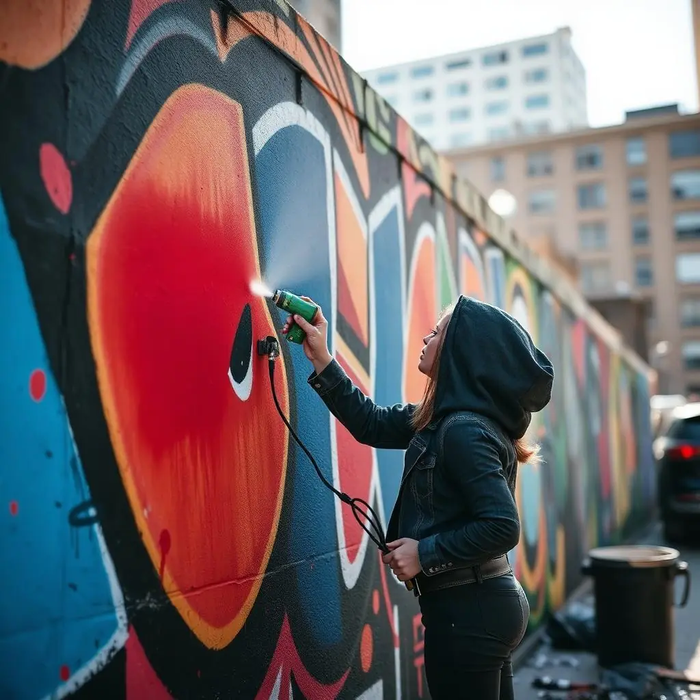
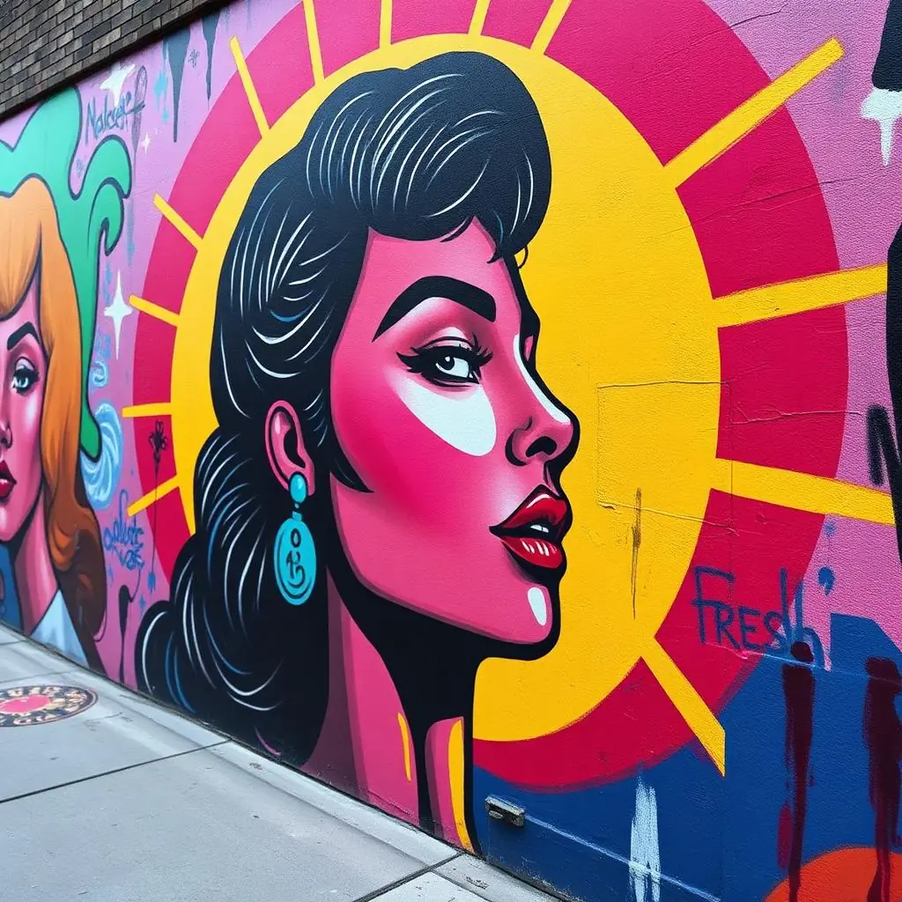

DIRECTORIO VIVO
La escena urbana también es nuestra
Un mapa abierto de raperas, trapperas, DJs, grafiteras y poetas que están cambiando el sonido y los muros de nuestras ciudades. Escúchalas, sígueles la pista y guarda a tus favoritas.


Artistas
0 artistas seguidas